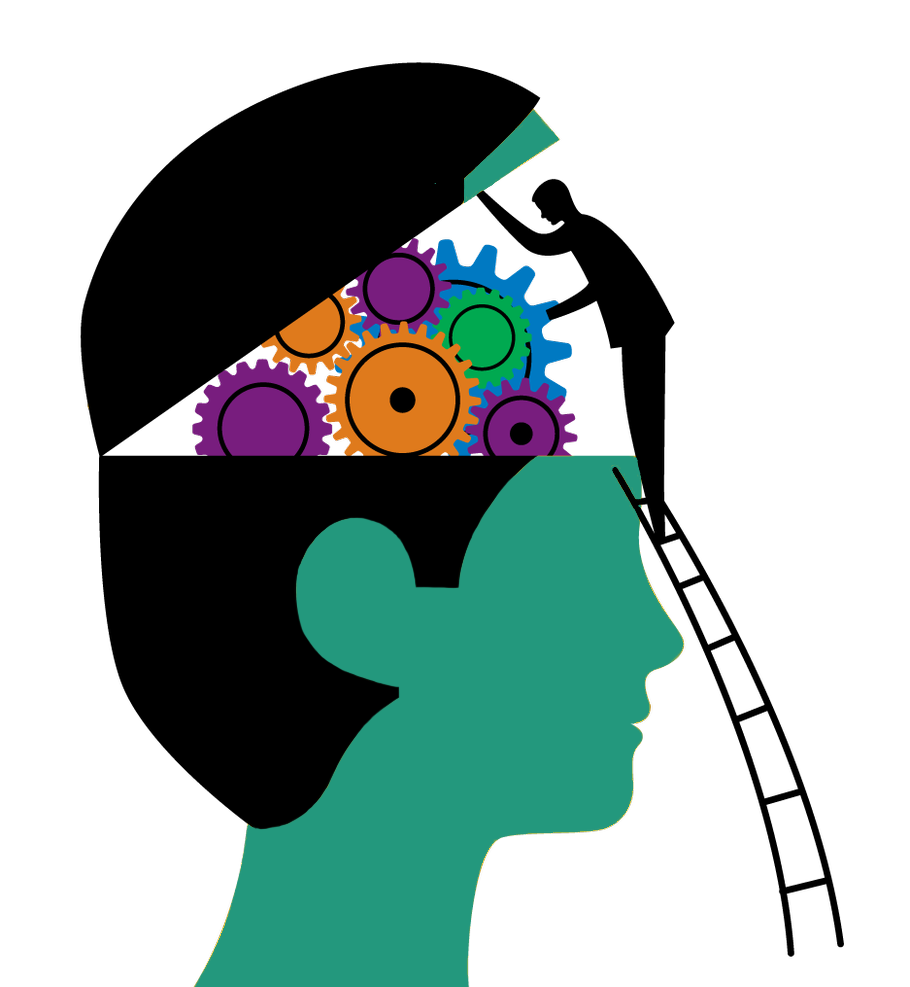

Psihologia este știința care studiază comportamentul uman, inclusiv funcțiile și procesele mentale ca inteligența, memoria, percepția, precum și experiențele interioare și subiective cum sunt sentimentele, speranțele și motivarea, procese fie conștiente, fie inconștiente.
Obiectul de studiu al psihologiei este psihicul care se poate descrie astfel: este o funcție a creierului și este substratul proceselor nervoase, reflectă subiectiv lumea obiectiva; este un sistem complex interconectat fiind un produs al influenței sociale.
Psihologia este indispensabilă pentru cunoașterea și dezvoltarea umană. Psihologia ne poate ajuta:
Psihicul uman este capabil să recepționeze, stocheze și prelucreze informația primită prin mecanisme senzorial percetive și logic-raționale. Acesta poate și să susțină activitatea orientând-o către un scop, reglând-o în funcție de împrejurări prin motivație.
Pentru mai multe informații referitoare la procesele psihice, vizitați acest link.
